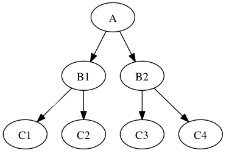

<div style="border:solid 1px;overflow-x: scroll; overflow-y: hidden;"><map name="dotmap">
<area shape="poly" id="node1" href="http://github.com/d13sector/GraphvizUtils/" title="A" alt="" coords="221,29,220,22,214,15,206,10,196,7,185,5,174,7,164,10,156,15,151,22,149,29,151,37,156,43,164,49,174,52,185,53,196,52,206,49,214,43,220,37">
</map></div>
